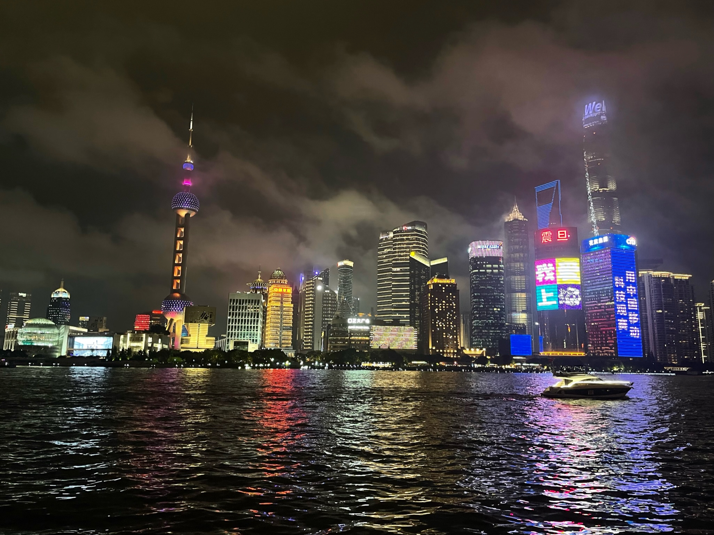
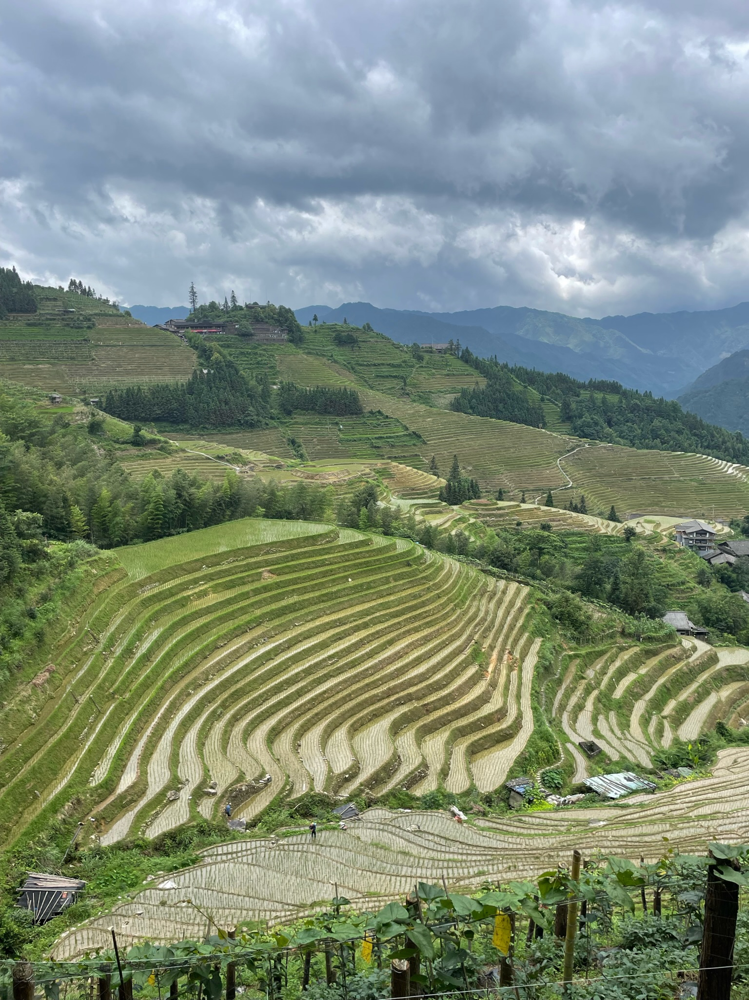
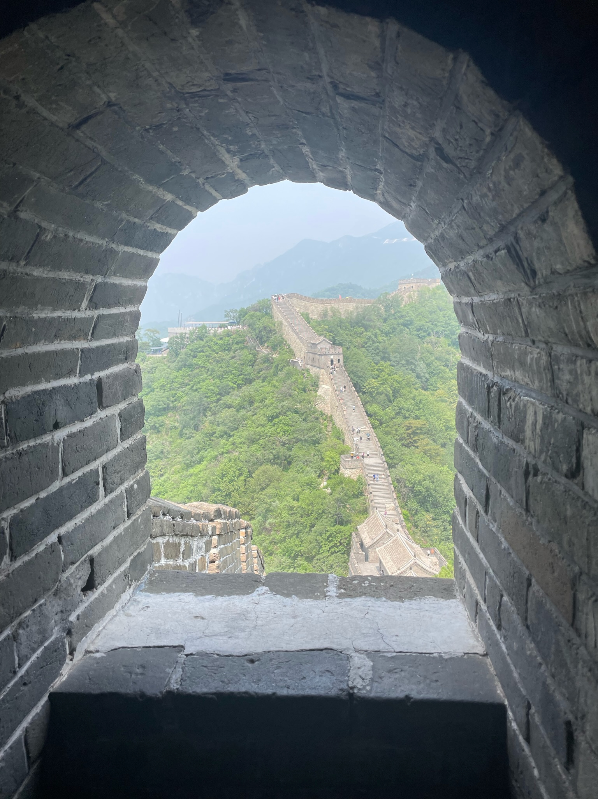

2 week itinerary travelling around Shanghai, Guilin, Xian and Beijing.
This itinerary covers what we did each day, how we travelled around and tips and tricks we learnt whilst travelling.
Welcome to Shanghai, a city where modernity meets tradition.
After arriving and checking in at your hotel, take some time to relax before heading out for an evening exploration.
Begin your adventure at the iconic Bund, where you can witness the stunning contrast between the historic colonial architecture on one side and the futuristic skyline of Pudong on the other.
As the sun sets, watch the city come alive with lights, reflecting off the Huangpu River, creating a magical atmosphere.
This is the perfect introduction to the vibrant energy of Shanghai.
Start your day with a visit to Nanjing Road, Shanghai’s famous pedestrian shopping street.
Bustling with locals and tourists alike, it’s the perfect place to experience the city's fast-paced lifestyle.
Continue to the Oriental Pearl TV Tower, one of the most recognized landmarks in Shanghai, where you can take in panoramic views of the city.
In the afternoon, immerse yourself in the tranquility of Yu Garden, a classical Chinese garden nestled amidst the urban sprawl.
Nearby, visit the City God Temple, a bustling area filled with traditional shops and eateries, offering a taste of old Shanghai.
Take a high-speed train to Suzhou, a city famous for its classical gardens, silk industry, and ancient canals.
Often referred to as the "Venice of the East," Suzhou offers a peaceful retreat from the hustle and bustle of Shanghai.
Begin your visit with a stroll through one of Suzhou’s UNESCO-listed classical gardens, such as the Humble Administrator's Garden or the Lingering Garden.
Explore the charming canals and ancient streets of Pingjiang Road, where you can enjoy traditional Chinese tea and local delicacies.
In the afternoon, visit the Suzhou Silk Museum to learn about the rich history of silk production in the region.
Return to Shanghai in the evening, filled with memories of Suzhou's serene beauty.


Guilin
Detailed description for Part 1.
Detailed description for Part 2.
Detailed description for Part 3.
Xian
Detailed description for Part 1.
Detailed description for Part 2.
Detailed description for Part 3.

Beijing
Detailed description for Part 1.
Detailed description for Part 2.
Detailed description for Part 3.
Detailed description for Part 3.
Detailed description for Part 3.
Visa Requirements
Write your content here. This area will be used to provide details or information related to Section 2. You can include multiple paragraphs, images, or other elements as needed.
Step 1 - Complete the online application form found here:
Step 2 - Attend the Chinese Visa Application Service Centre. There are three in the UK. Note you have to leave your passport with the office.
Step 3 - Collect your passport and visa from the Chinese Vise Application Service Centre or you can pay to have it posted.
Document Checklist
Signed and dated application form
Flight booking receipts to and from China
Accomodation booking receipts
Passport scanned pages
Passports
Printed passport style photos (if not added to online application)
Getting Around
There ae lots of easy way to travel around China. Click on each method below to see more detail on how to book, how to use and more about each one.
Flying is a quick way to travel between major cities in China. It’s efficient but consider the environmental impact.
fedjbacdoas
bfwedc
fwendscoe
China's train network is extensive and offers a scenic way to see the countryside. High-speed trains are particularly convenient.
Booking your train journey
Firstly it is important to book train travel ahead of time in China. Many of the trains are avaialable to book from 30 days in advance.
You can book tickets online, either through offiical website or travel agencies. Ensure you have your e-ticket number and passport when booking.
At the train station
The stations in China have airport like security so make sure you arrive at the station plenty ahead to time to get throuh security and find your waiting area.
Always carry your passport and e-ticket number with you, as they are required for entering the stationa and boarding the train.
Boarding the train
Passengers are allowed onto the platfrom about 5 minuted before the trains arrive. Be prepared for a rush when the gates open.
As a passport holder there is usually only one gate, on one of the sides, that you can go through.
Your ticket includes an assigned seat and carriage.
Exiting the train
Upon arrival at your destination, head towards the ecit. Lingering on the platform is not permitted, so follow the signs or staff to leave the station.
The Maglev train is a unique experience, connecting Shanghai Pudong Airport to the city center in a flash.
fedjbacdoas
bfwedc
fwendscoe
The metro is an efficient and affordable way to navigate cities like Shanghai and Beijing. It’s clean, safe, and reliable.
The metro's in China were easy and cheap to use.
fedjbacdoas
bfwedc
fwendscoe
Taxis are convenient for short distances, though you may encounter language barriers. Use apps like DiDi for easier communication.
fedjbacdoas
bfwedc
fwendscoe
Must Have Apps
Alipay
This app is a must! It's your payment method, travel card and food ordering app all in one.
Metro man
Your content goes here. This can be a paragraph of text or other elements as needed.
Google Translate
We found the scan text and voice translate function on this app incredibly useful. Not many local people are able to speak English, even in the hotels, but they used to using google translate to help translate.
A VPN
Your content goes here. This can be a paragraph of text or other elements as needed.
E-Sim
Your content goes here. This can be a paragraph of text or other elements as needed.